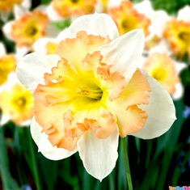
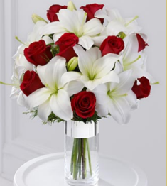
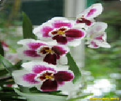

Hoa thủy tiên
Những bát hoa thủy tiên đẹp chưng trong nhà ngày Tết vốn là
thú chơi tao nhã, thanh lịch, hào hoa của người Hà Nội xưa.

Hoa Violet
Hoa phi yến còn có tên hoa chân chim vì hoa trông giống như chân con chim hoặc
phi yến (chim yến đang bay) hay violet vì hoa màu tím và còn có tên La-let hay
đông thảo thuộc họ Mao lương (Ranuncolaceae) thực chất cũng có cây cho hoa màu
hồng và trắng xong rất ít.

Hoa Lilies
Những giọt nước mắt nào có giúp được gì! Giắc sẽ phải lên đường chinh chiến
ở một xứ xa lạ, đành bỏ lại Lilia, người vợ chưa cưới của mình trên đất Pháp.
Lúc chia tay, Giắc rút trái tim ra khỏi lồng ngực mình, trao cho Lilia và nói:

Hoa lài
Mùi hương thoang thoảng như cứ đeo đẳng theo chúng ta mọi nơi lại phát ra từ những
bông hoa trắng nhỏ xíu, mong manh.

Hoa phong lan
Phong lan là một loài hoa với nhiều chủng loại khác nhau, với mỗi loại phong lan, hoa
lan lại có những vẻ đẹp riêng. Ở Việt Nam cũng như trên thế giới loại hoa này rất được
ưa chuộng để làm cảnh. Tuy nhiên đây là một loài hoa khá khó trồng nếu không biết cách
nhưng lại cho hoa lâu dài. Cùng dieiendanbaclieu.net thưởng thức những bông hoa phong
lan tuyệt đẹp nhé.